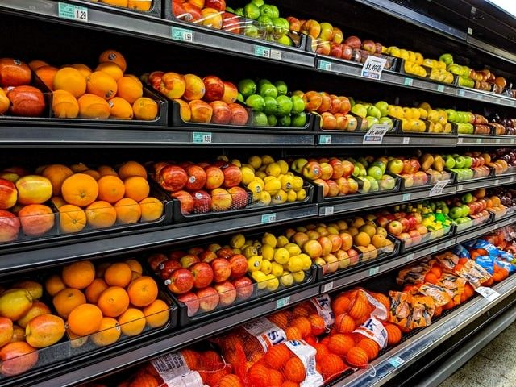
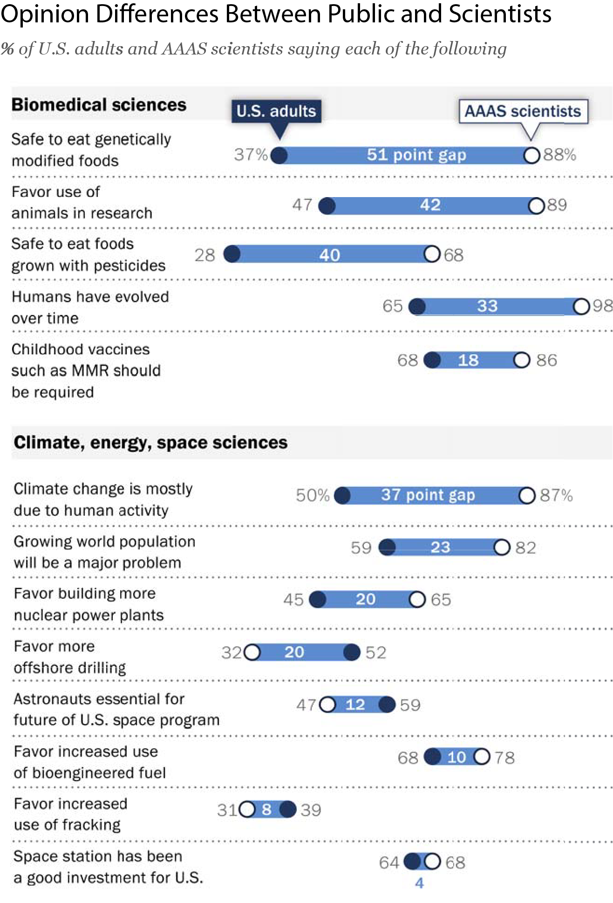
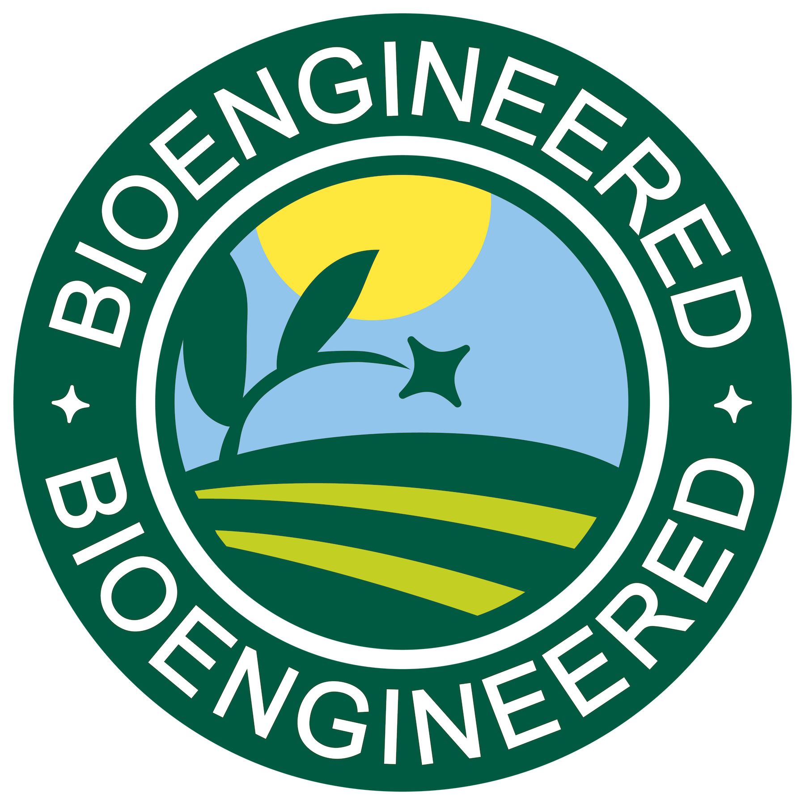
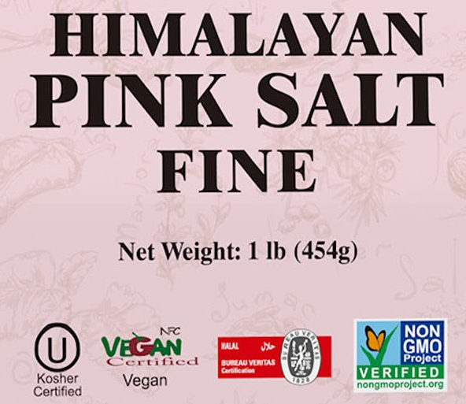

On this July 4th week, I thought I’d take a break from solving the “climate control” problem with something perhaps a bit more achievable: Food labeling.

Since late last year, I’ve been working on a legislative memo with the Federation of American Scientists DayOne Project. Together, we devised a proposal to protect consumers from deceptive marketing, either legislatively or through executive action. The main link is here , and I encourage you to read the whole thing, contact your Representative and Senator , write to the White House , and prod members of our Government to read it too. I’ll summarize the points below, but I thought I’d provide the back story.
In my time in DC, I noted many contradictions when it comes to regulating agricultural products, particularly given the rapid pace of advances in biotechnology. It isn’t surprising that laws are often inconsistent and conflicting (if there were an algorithm, we wouldn’t need lawyers 1 !). But you’d think that, as in the case of global warming, a scientific consensus would ultimately guide conflict resolution. Au contraire!
In 2015, the Pew Research Center conducted a public opinion poll that included members of the public and members of the American Association for the Advancement of Science (AAAS), a cross-disciplinary community of scientists. Here’s a summary chart from that report:

Unsurprisingly, scientists are generally more confident about technologies than the general public. But what is remarkable is that more scientists believe that “genetically modified” foods are safe to eat (the most significant public-to-scientist spread) than those who think climate change is due to human activity or that childhood vaccines should be required!
The Original Sin, at least legislatively, was the Organic Foods Production Act of 1990, which directed the Secretary of Agriculture to develop the “USDA Organic” label you might see on some food. The USDA, in turn, consulted with the National Organic Standards Board (NOSB), a volunteer advisory board comprised of farmers and largely non-scientific scholars, to define “organic”. It took ten years (!) of rulemaking. During this period, the NOSB expanded the definition from the legislatively clear how food is grown and processed (generally without synthetic fertilizers or chemical pesticides) to the murky area of what is produced, explicitly excluding “GMOs” from being labeled “organic”.
Then, in 2014, Vermont made things more complicated by passing a state law requiring labeling GMOs as “ingredients” for food sold within the state. To assert Federal authority over the matter, Congress passed a national statute, the National Bioengineered Food Disclosure Standard, again directing the Secretary of Agriculture to develop a Bioengineered (BE) label. This labeling went into effect in January 2022. This standard is more science-based and defines explicitly “bioengineered”.
The issue is that the labels conflict with one another and the ubiquitous butterfly label provided by The Non-GMO Project, a Berkeley-based NGO supported mainly by Whole Foods/Amazon. But only the BE label has a bright-line analytical standard for what it means as an ingredient.
In the meantime, consumers are left wondering what the heck they are eating, while marketers can buy their ‘butterfly’ if they want a “healthy” label. And Whole Foods sells its entire line as “healthy” food at a premium, with very little scientific support.
The main issue is that genetic modifications that lead to changes in ingredients can either benefit the farmer, the consumer, or both:
-
Herbicide resistance helps the farmer because weeds can be suppressed and yields improved,
-
Reducing trans fats in oilseeds helps the consumer because the oil is healthier, and
-
Insect resistance helps the farmer because insects can be repelled without chemical insecticides and helps consumers because of lower residual insecticides.
The kicker: Grocery stores can label an entire produce section as “organic” without including only USDA Organic label fruits and vegetables! BE labels are uncommon because there are very few foods that qualify. Look for them the next time you shop:

And marketers can buy their way into a healthy label, like:

Kosher and Halal, I understand—those are religious terms, and the process is governed by religious etiquette. But vegan and non-GMO? Come on. It’s salt from Pakistani salt mines that aren’t even in the Himalayas.
Consumers deserve better from their Government and should be protected from deceptive advertising. Hence the memo.
See Mata v. Avianca covered here: